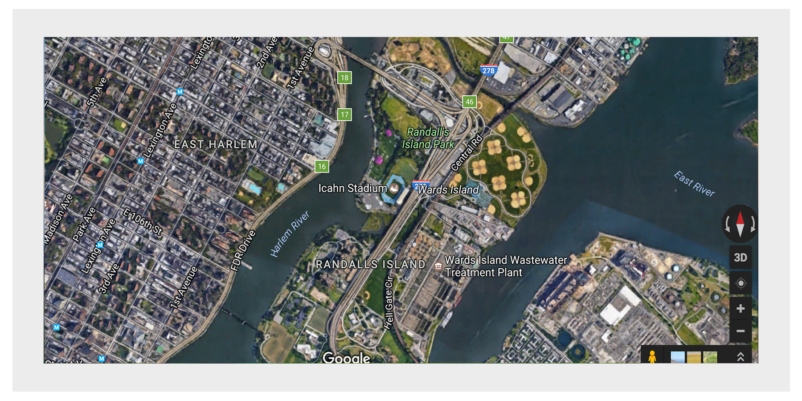

Randall’s Island Park has a rich history of hosting cultural events and continues to do so today. Throughout the year, RIPA provides numerous free drop-in programs such as walking tours, movie nights, waterfront activities and our annual Cherry Blossom and Harvest Festivals. In addition, large special events, produced by independent organizations other than the City and RIPA, offer visitors a great variety of exciting options – continuing the Island’s strong tradition as a central entertainment venue for New York City.
